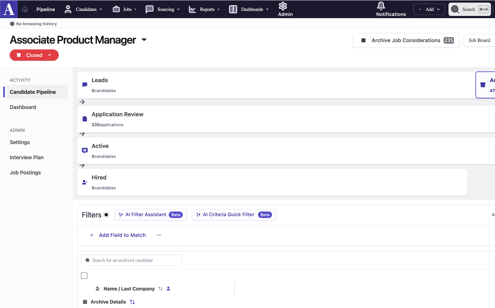

The Confidence Ramp
A UX pattern I designed for bulk actions, and a chronicle of trying to use AI to prototype it.
AI written, human edited AI usage levels:No AI used - 100% human written
Human written, AI edited - I wrote the first draft
AI written, human edited - AI wrote the first draft
Read more
Table of Contents
Note: I created the below artifacts in June 2025 and just now got around to writing this up. The fidelity issues I describe below are still not solved, but AI tooling is changing fast!
The Problem
You just hired a candidate and are about to close the position in your ATS. You're hovering over the "Archive all" button, which will send auto-reject emails to the 237 candidates left in your pipeline. You click the button and immediately feel a knot in your stomach. Did you just email the wrong template to 237 people? Was there a candidate in there you meant to keep?
Or imagine this: you ask Claude to create 50 Linear tickets from a spec, matching your team's specific templates. It starts firing them off. Are they right? You don't want to approve each one individually, but you also don't want to blindly trust it to get them all right.
This anxiety is everywhere in software (or at least, I hope it's not just me). Bulk actions are efficient but terrifying. The existing solutions are either "approve everything one by one", which defeats the purpose, or "trust the machine and pray" (and who trusts machines these days?!).
There's a middle ground.
The Confidence Ramp
Before a bulk action runs on all items, you should be able to manually perform that action on a small sample first. Ideally, this sample is a representative cross-section of the data. Its size can be manually set, with a suggested threshold based on the number of overall items and risk level of the operation.
In the confidence ramp phase, you manually approve or decline the action for each item in the sample. Once you've built enough confidence that the operation is doing what you expect, you hit "Process Remaining" and let it rip.
Try it out below. Approve or skip the sample candidates, then hit the bulk process button:
Think of it like staged rollouts for user actions. Much like feature flags can be used to gradually increase traffic on a new piece of code from 1% to 100%, the confidence ramp does something similar and keeps the human in the loop til they're ready to let go.
The goal is to catch edge cases early, build confidence in your systems, and keep it efficient.
Prototyping With AI
I wanted to see this pattern integrated into a real product's UI, so I picked Ashby (an ATS I'd been using heavily while hiring). I asked Claude to mock it up.
Round 1: Generic prototype. Claude got the concept more or less right. The UX logic was solid, but it looked like a generic Bootstrap app, not like any real product.
Round 2: Ashby-styled version. I gave Claude screenshots of Ashby's actual UI and asked it to match the design. It got the general vibe (purple palette, layout structure) but wasn't anywhere close to pixel-perfect.
Round 3, 4, and more... I descended further into madness trying to get Claude to create anything that looked like Ashby's real UI. (Why? It seemed like fun at the time. Famous last words, I know.) I grabbed actual React components from Ashby's source and pasted them into the conversation with their embedded styles, hoping Claude could use the real CSS values. Instead, I got raw React import statements at the top of the page with broken styling.
At this point I gave up on getting exact fidelity from Claude. Instead, I decided to try Magic Patterns.

My understanding was that Magic Patterns solves for this problem, but it didn't really get close. I posted about it in a product community, where co-founder of Magic Patterns kindly weighed in. He said 1:1 perfect matching of a UI is not their product's use case, since the technology simply isn't there yet. (Direct quote: "If AI could match Asbhy directly in one shot I think everyone’s jobs would be in trouble haha.") The real use case, he explained, is communicating visually with stakeholders, not producing production-ready mockups.
Fair enough. I don't work at Ashby and was just doing this for fun. I can imagine if I were a PM there, I'd be satisfied with something lower-fidelity. (Now if I were a designer there...maybe not.)
What I Learned
The confidence ramp pattern itself is solid. I'm proud of the idea and think it fills a real gap. I haven't seen any systems that use this yet - if you know of one, let me know. And if you work on a product with bulk actions, feel free to steal this idea. :)
AI is fine at UX, not great at UI. Claude understood the interaction pattern and could reason about what should happen. It just couldn't make it look like it belonged in a specific product.
Prototyping with AI is best for thinking through a rough draft, not for creating something prod-ready. As of April 2026, I'm working with an increasing number of designers who are using prototypes to create rough drafts, but none of them can be handed off to eng or shipped without significant refactoring to fit our design system.
If you're an AI tool builder reading this: high-fidelity UI matching from screenshots is the unlock that would make AI prototyping go from "useful for thinking" to "useful for shipping."
P.S. The founder of Alloy has told me that discussing this concept with him inspired him to start his company. He might've just been gassing me up, but I'll take it!
Return to top ↵